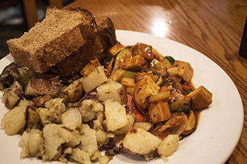
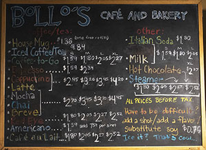
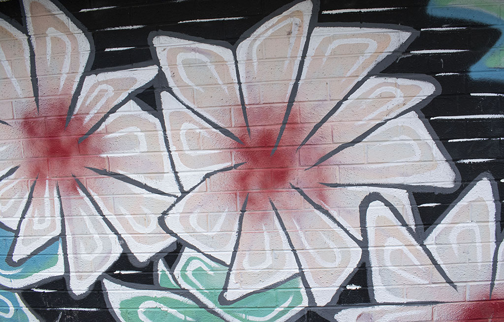
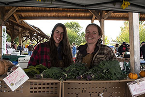
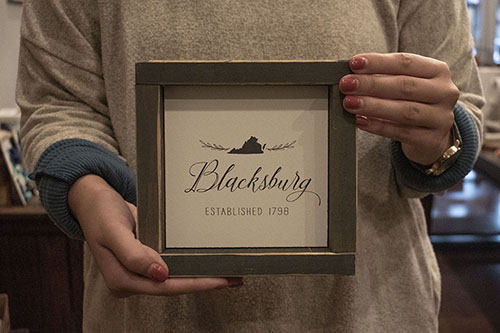
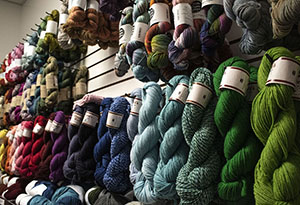
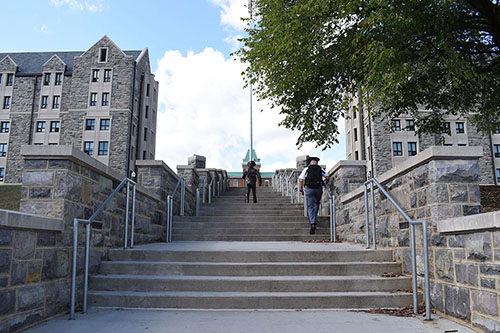
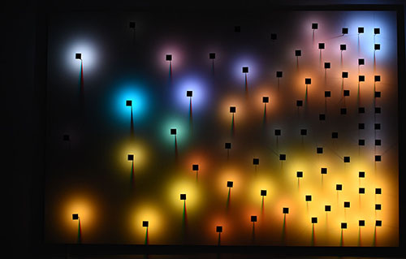
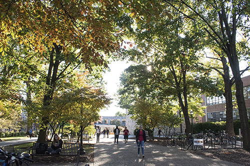
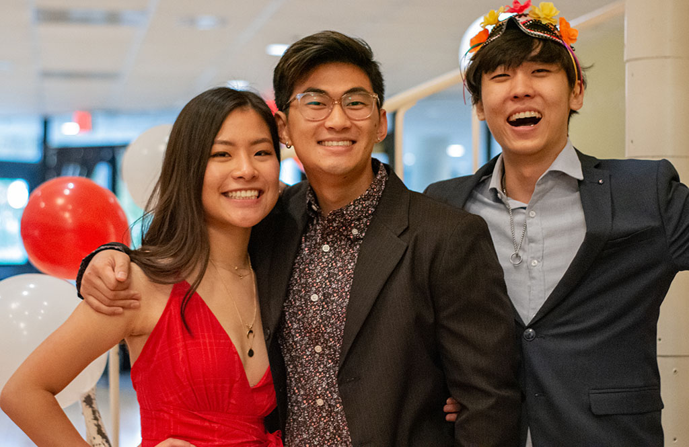

GILLIE'S
Gillie’s is a longtime favorite of locals and Virginia Tech students alike. They serve delicious vegetarian food using produce bought locally and in-house baked bread. Pictured above is my personal favorite dish; Tofu Scramble. It is a seasonal vegetable medley and tofu that is stir fried in a house barbeque sauce with a side of house-made potatoes and bread.

BOLLO'S
As an avid coffee lover, Bollo’s is one of my favorite coffee shops to visit. Situated right next to campus, Bollo’s offers seating, free Wi-Fi, and prices that won’t break the bank. In addition to the fair-trade organic coffee, they offer a variety of baked goods that they bake in-house.

STREET ART
One of the great things about Blacksburg is its’ numerous local artists. This is just one of the many pieces’ downtown that displays the rich art culture we have here.

FARMER'S MARKET
These two lovely ladies are one of the many vendors who sell their organic produce at the weekly Blacksburg Farmer’s Market. Hailing from Floyd, VA, they sell kale, bok choy, beets, mini pumpkins, and other produce in the Fall.

T.R. COLLECTION
T.R. Collection is one of the best kept secrets of downtown Blacksburg. Featuring many decorative items, tools for the kitchen, jewelry, and many more, you will be sure to find a great gift for any occasion.

NEW RIVER FABRIC CO.
Nestled on Roanoke St. right next to Main St. is New River Fabric Company. Soon, they will be moving into a bigger store right on the corner of Roanoke and Main, they are sure to address all your knitting and sewing needs.

BRONZE
Local Sculptor Larry Bechtel sculpted this stunning display of Virginia Tech’s first ever student, Addison Caldwell. After a series of models, he sent the final one to the Carolina Bronze Foundry to be molded and casted

DATAFORM
Moss Arts Center hosts several art exhibitions that are free to the public during the year. Currently, a collaboration between Yorgo Alexopolous, Jim Campbell, and Daniel Canogar called “DATAFORM” is on display. Using a mix of real-time data, computer generated algorithms, and LED’s, creates stunning art pieces.

CAS REVEAL
Chinese American Society, otherwise known as CAS, is a prominent Asian American organization here at Virginia Tech. This picture was taken at the annual Big/Little Reveal Banquet. Shown above is Amy Lin, Public Relations, her big, Alex Tsai, and Chris Kwon, Web Master.

CAS REVEAL
This is one of my favorite spots on campus. Something about the towering trees and just this walkway all the way to Johnson feels peaceful to me.
{kind=link}
{kind=link}
{kind=link}
{kind=link}
{kind=link}
{kind=link}
{kind=link}
{kind=link}
{kind=link}
{kind=link}